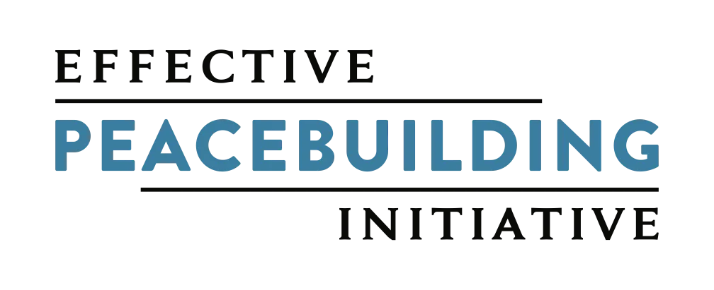
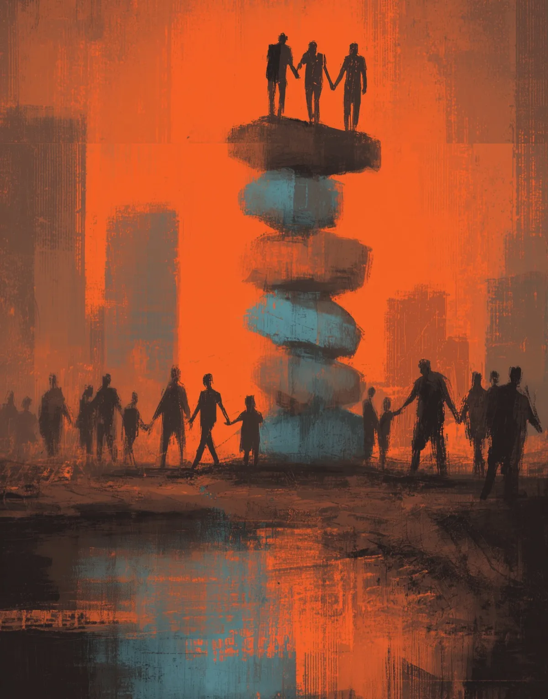
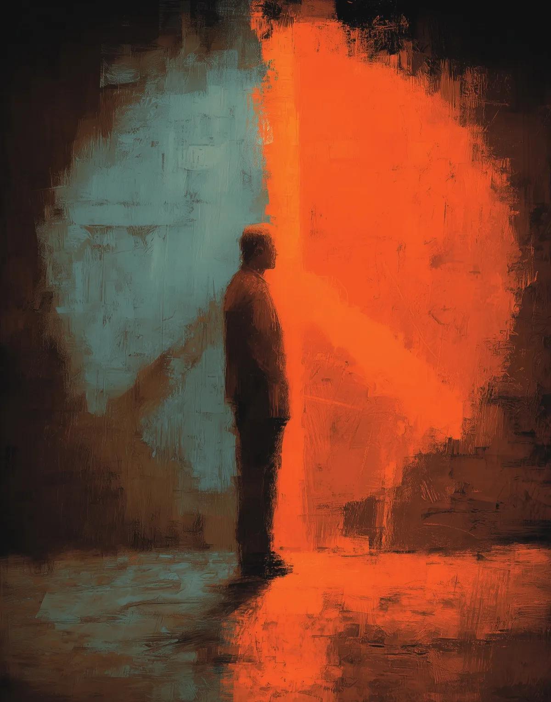
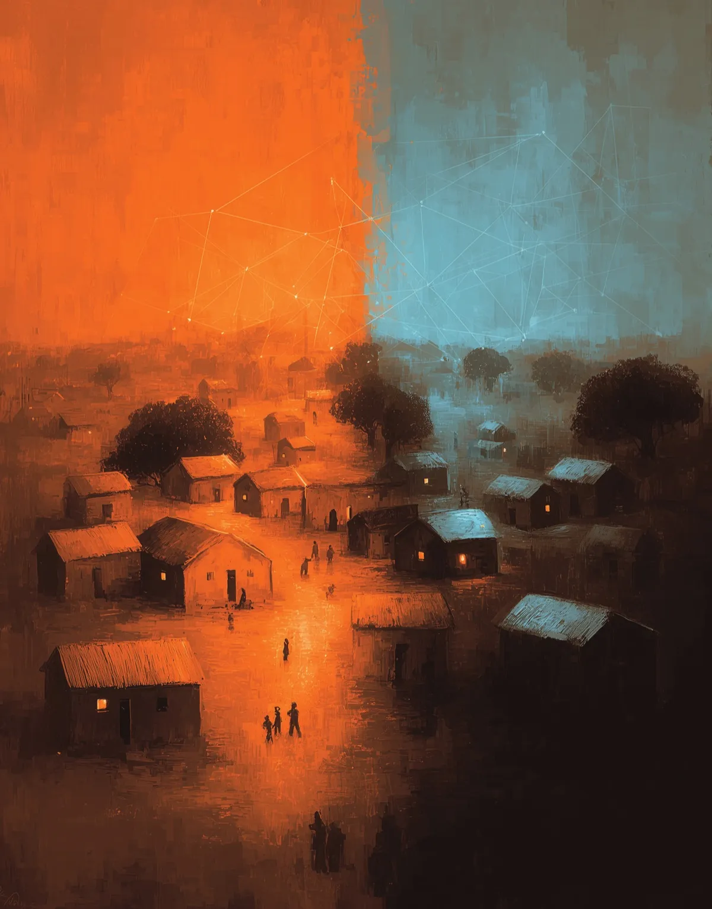
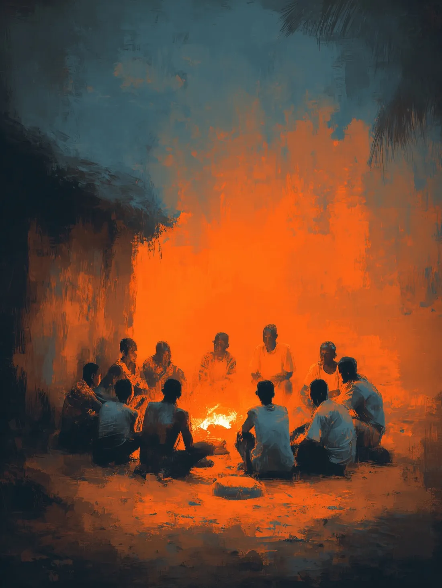

Vol. I · From the Editor
The Global Peace Almanac is designed to be a living dialogue, and with this inaugural issue we aim to establish a foundation that grows more rigorous and representative with every edition.
Dear reader —
When we began assembling this first volume, we asked fifteen writers a single question: what would it take for peacebuilding to work? Their answers disagree with one another, sometimes sharply. That is by design. A record of consensus would tell you very little about a field this unsettled.
The Almanac is printed once — two hundred and fifty numbered copies — and released here one entry per month. The slowness is deliberate. A field that moves from crisis to crisis rarely makes time to read itself; we wanted to build that time into the calendar.
My thanks to the seventeen contributors who trusted us with their thinking, and to you, for reading. The record is open.
The Global Peace Almanac is a semiannual publication of the Effective Peacebuilding Initiative (EPI), produced in collaboration with a network of partner organizations working in conflict-affected regions around the world. The Almanac goes in-depth on the systems, strategies, and evidence behind efforts to reduce violence. Featuring strategies from active peace processes, analyses of emerging approaches, insights from researchers and practitioners, and data from trusted sources, it provides a clear snapshot of global peacebuilding efforts and their significance. The publication is designed to help policymakers, funders, and practitioners understand what is working in peacebuilding, what is struggling, and what may be needed to build a more effective peace sector.
- Entries
- 15
- Open
- 01
- Sealed
- 14
- Next release
- TBD

An independent nonprofit working to improve how the world understands and practices peacebuilding.
Part I The State of Peacebuilding


Part II What Works — and How Do We Know?

Part III Peace in Practice

Part IV The Future of Peacebuilding
Release of records
The complete Vol. I file opens when Vol. II publishes.
The edition of 250 numbered copies is spoken for. Waitlist members receive the complete Volume I PDF, every entry and endnote, on the day Volume II enters the record.
Prefer a printed copy? Request one →